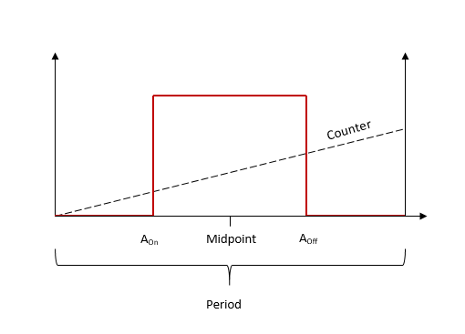
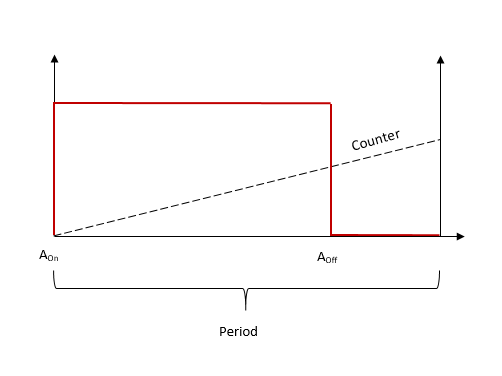
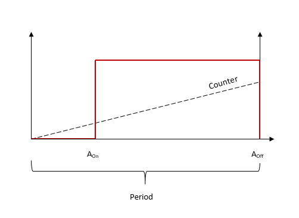

PWM Usage Notes
PWM Usage Notes — Usage information about the I/O module
How to Configure Typical Signal Types
This section shows how to configure the PWM code module in order to achieve the following PWM signals:
Center-aligned (symmetric) e.g., for DC motor control, solar inverter
Left-aligned modulation e.g., servo motor (change actions)
Right-aligned
Inverted
Center-Aligned
Here is a timing diagram for a center-aligned (symmetrical) signal:

Here the PWM Pattern is parameter is set to Symmetric and centered on half the period (see the PWM Generation tab in the module dialog). In this configuration, only the duty cycle value is required. A-On and A-Off are automatically calculated by the driver so that the PWM output is symmetrical about the midpoint (half the period).
Left-Aligned
Here is a timing diagram for a left-aligned (asymmetrical) signal:

Here the PWM Pattern is parameter is set to Asymmetric (see the PWM Generation tab in the module dialog). In this example, A-On is fixed to 0. A-Off is then set to give the desired pulse width.
Right-Aligned
Here is a timing diagram for a right-aligned (asymmetrical) signal:

Here the PWM Pattern is parameter is set to Asymmetric (see the PWM Generation tab in the module dialog). In this example, A-Off is fixed to the same value as the Period. A-On is then set to give the desired pulse width.
Trigger Output/PWM C Usage
In addition to the A Output and B Output signals, the PWM generation module provides a Trigger output which can be used to trigger/control other I/O components e.g., A/D converters. The Trigger Output signal outputs a high pulse for a duration defined by the Trigger Pulse Length Vector parameter. The output is triggered depending on the conditions specified by the Trigger Source parameter. This trigger line is shared with PWM C Output to make PWM C/Trigger output.
![[Note]](images/note.png) | Note |
|---|---|
Values expressed in seconds will be rounded to the FPGA resolution. For instance, if the FPGA base clock is equal to 75 MHz, then the resolution is 13.33 ns. The Trigger Output Pulse Length parameter on the FPGA has a range from 0 to 65 535 which results in a maximum pulse duration of 873.8 microseconds (when the FPGA frequency is 75 MHz). To use the trigger, the PWM C-On and C-Off parameters must be set to zero. When PWM C is used, ensure that none of the trigger generation options in the Triggering tab are enabled. |